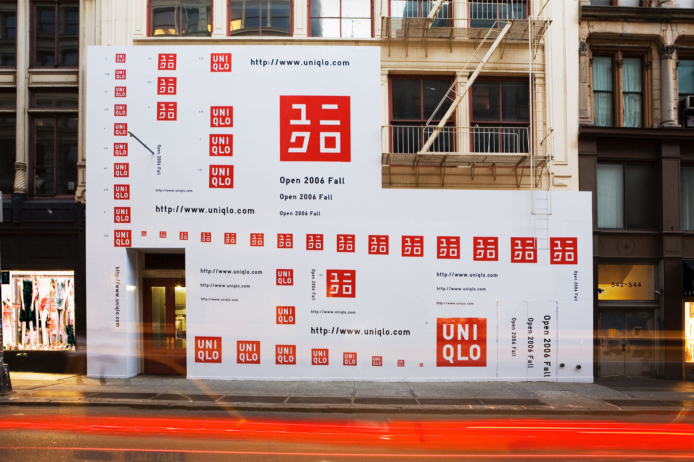
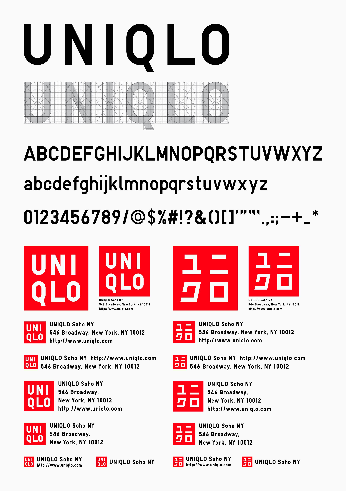
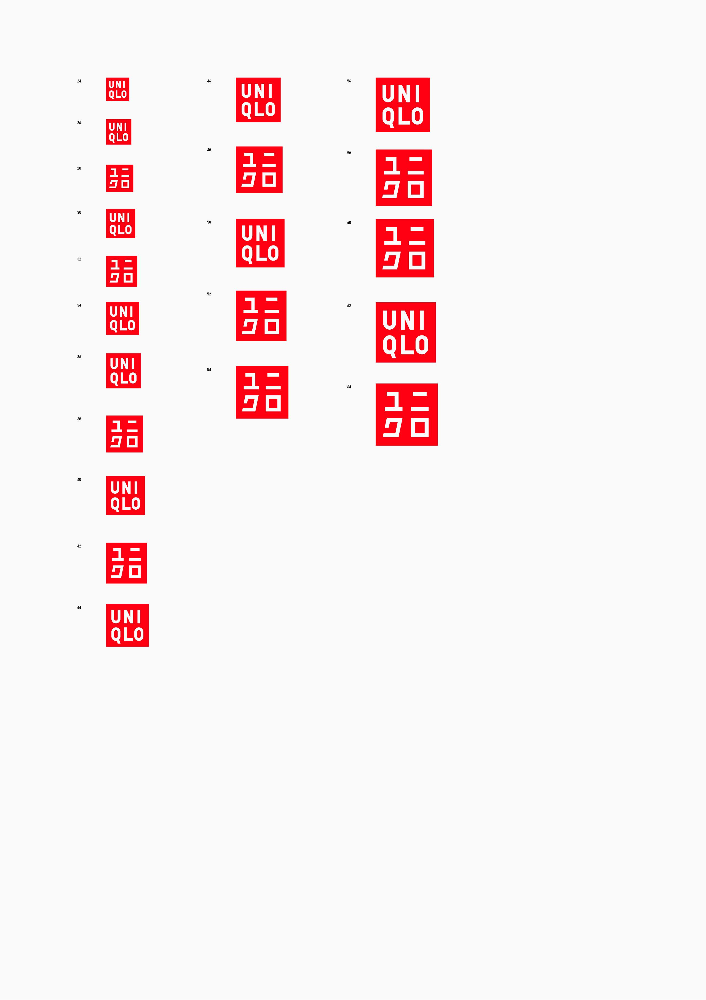
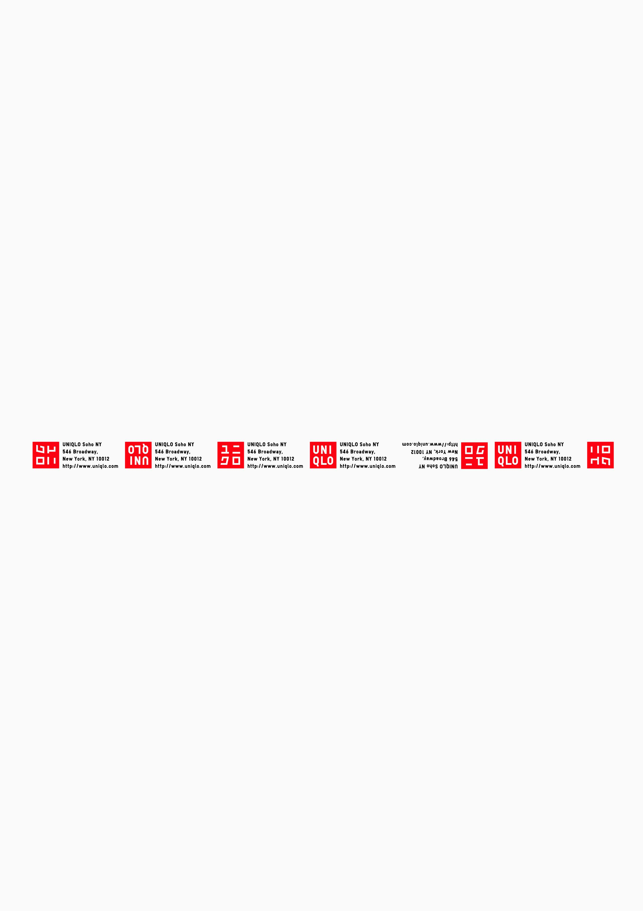

UNIQLO
Kashiwa Sato took charge of all global branding communication activities for Uniqlo, a global leading fashion brand from Tokyo, starting with the opening of the flagship store in 2006, ‘UNIQLO SOHO NEW YORK.’ To realize the unique creative and design foundation of Uniqlo, he established the core branding concept “super rationality with aesthetic consciousness,” which summarizes Uniqlo’s value proposition to the world: high-quality products at affordable prices. Kashiwa also created a visual identity by modifying Japanese katakana and original fonts, and organized expert teams of architects, interior designers, and graphic artists to design and promote the same tone and feel for each of the flagship store in London, Paris, Shanghai, Tokyo, and Berlin.
そのコミュニケーション戦略のクリエイティブ・ディレクションでは、高品質の商品を低価格で提供する日本ブランドという特長を、「美意識ある超合理性」というコンセプトに集約させた。カタカナと欧文を併記したロゴマークやコーポレートフォントの開発から、国内外のクリエイターと協働した世界各地の旗艦店のデザイン、商品企画. グローバル展開のスタートとなった「ソーホー ニューヨーク店」のオープンに際して開発したバイリンガルのロゴマークには、欧米由来のカジュアルウエアを日本流に変換してきたユニクロの個性が体現されている。ユニクロ創業時に使われていたビビッドな赤を基調とし、極限まで研ぎすませたミニマルなロゴマークとオリジナルフォントを核としたグラフィックデザインをコミュニケ―ション戦略の核に据え
Type Design
Brand Sizing
Horizontal Design
Highlight of the Graphic Design
The overall graphic design, comprised of the logo and original fonts, was the core of the communication strategy, which was used on “under-construction” panels, yellow cab roofs, and a variety of media to encourage awareness of the logo and of the Uniqlo brand. Kashiwa also organized a global professional creative team with Masamichi Katayama of “Wonderwall,” who designed the interiors of many of Uniqlo’s flagship stores, and Yugo Nakamura of ‘tha ltd’, who designed their websites.